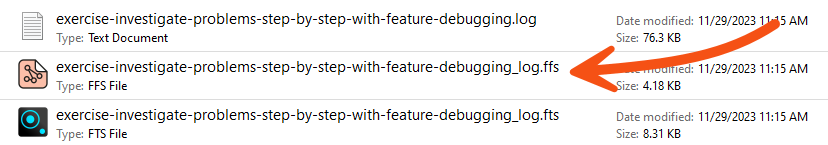

In software development, debugging a process after completion is called "post-mortem debugging"! We're trying to find out what caused a fatality.
After completing this lesson, you’ll be able to:
In this course, we’ll cover best practices for debugging your workspaces.
Even skilled FME users seldom produce new workspaces with zero defects. For that reason, all users must be aware of the debugging techniques available in FME.
Generally, debugging in FME consists of determining whether a problem has occurred and then tracking down the problem's source (for example, where it appears in the workspace). Once you have determined where a problem arises, you can investigate it.
There are various debugging techniques available in FME, and it's essential to use these in the correct order. For example, you shouldn't waste time randomly changing parameters and re-running the workspace when a simple log message explains the issue!
A logical order would be:
In software development, debugging a process after completion is called "post-mortem debugging"! We're trying to find out what caused a fatality.
FME logs contain a record of all stages and processes within a translation. The contents are vital for debugging purposes.
Log Message Types
Different message types appear in the log window, including:
The Log window is displayed as a table. The Transformer column shows you which transformer an error/information message is coming from. Click the hyperlinked transformer name to navigate to the canvas element producing the message. Using this link to identify where errors are occurring will make your debugging more efficient.
Besides writing the log to a text file (<workspace name>.log), FME also writes a spatial log:

The spatial log is a dataset of features (in FME Feature Store format) that the log mentions. FME generates a spatial log from <Rejected> Features when Navigator > Workspace Parameters > Reader/Writer Redirect is enabled or when a Logger has Feature Logging set to "Log and Record." You can open the FFS dataset within FME Data Inspector or the Visual Preview window in FME Workbench to inspect the features and identify any problems that caused FME to reject them.
The Translation Log window should be the first place you check when a translation finishes. It will tell you if there are any concerning errors or warnings.
Errors
If an ERROR occurs, FME will likely stop the translation. There will be red text in the log and some statements such as:
Program Terminating Translation FAILED.
There may be several ERROR messages, so scroll back up the log window and identify the first of these, which is the likely cause of the problem. For example, this message:
ERROR |Error connecting to PostgreSQL database(host='postgis.train.safe.com', port='5432', dbname='fmedata', user='fmedata', password='*'): 'FATAL: password authentication failed for user "fmedata" FATAL: password authentication failed for user "fmedata"
...is an obvious problem authenticating a database connection.
Warnings
Even when a translation succeeds, it's essential to check the log for the following comment:
Translation was SUCCESSFUL with X warning(s)
If there are any warnings (for example, if X > 0), use the search option to look for the word WARN. Any warning messages might significantly affect the quality of the output data.
Finding the Error's Source
Click the log hyperlink to look at the object on the canvas that produced the error.